The ASHA
A community health worker, on foot, from house to house, often without signal.
- Who needs me next?
- What do I need to do?
- What happens when I’m offline?
A smartphone
Case study · Service design
One care journey. Three people. One connected system.
Arogya Line is a care-coordination concept designed to connect families, frontline health workers, and primary health centres across one continuous care journey.
An ASHA worker can record and triage a concern, a PHC doctor can act on the same information, and the family can receive the doctor’s advice through a phone call — without needing a smartphone.
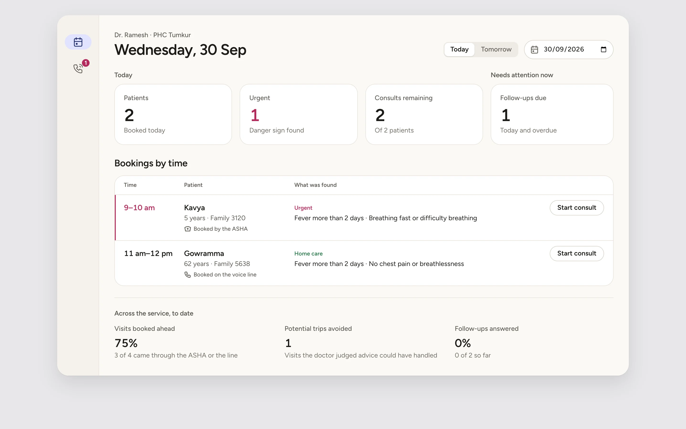
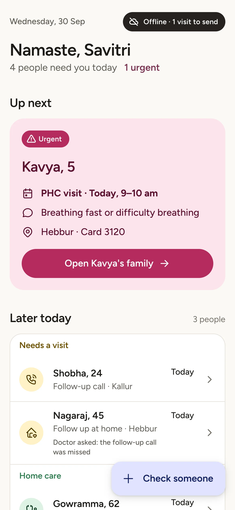
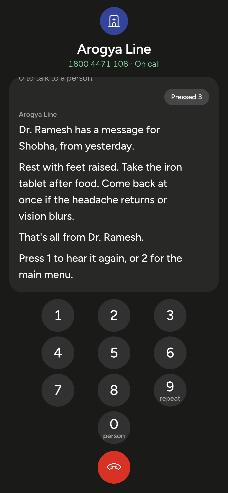
01Problem
Healthcare rarely happens in one place.
A concern starts at home. An ASHA worker helps assess it. A patient may need to visit a PHC. A doctor adds advice. Then the family needs to understand what happens next.
Each step involves a different person, a different context, and often a different way of accessing the system.
The design challenge was therefore not:
How might I digitize rural healthcare?
It was:
How might I keep one patient’s care journey coherent as it moves between the family, the ASHA worker, and the PHC?
Every person does their part. The record breaks at the gaps between them.
A community health worker, on foot, from house to house, often without signal.
A smartphone
At the primary health centre, seeing the day’s patients one after another.
A desktop
At home, often sharing one basic phone, caring for someone who is unwell.
Any phone, even a basic one
02System
The product isn’t three interfaces.
It’s one care record moving between three people.
All three surfaces read and write the same record. A booking the ASHA saves offline appears on the doctor’s list the moment it syncs, and the advice the doctor saves is what the family hears on the line.
The ASHA’s work can’t wait for signal, so saving never depends on it.
A smartphone for the ASHA, any phone for the family, a desktop at the PHC.
The ASHA thinks in households, the doctor in appointments, the family in one person and tonight.
The system screens and suggests; a person decides, and a person is always one key away.
One primary action per screen, at the thumb. The ASHA never has to choose between two things that look equally important.
What was booked, what was said and what is waiting to send is shown where it matters, not recalled from an earlier screen.
Pink, yellow and green come from the IMNCI chart the ASHA trained on, and always travel with a word or an icon.
Each step hands something to a named person: a booking to the doctor, advice to the family, a follow-up call to the ASHA. Nothing is handed over without someone deciding it.
03ASHA app
The ASHA’s phone is not designed as a dashboard. It is a work queue. The home screen therefore starts with the question: “Who needs me next?”
Instead of asking the worker to interpret a collection of statuses, the system surfaces the next meaningful action and keeps the patient, task, urgency and household context together.
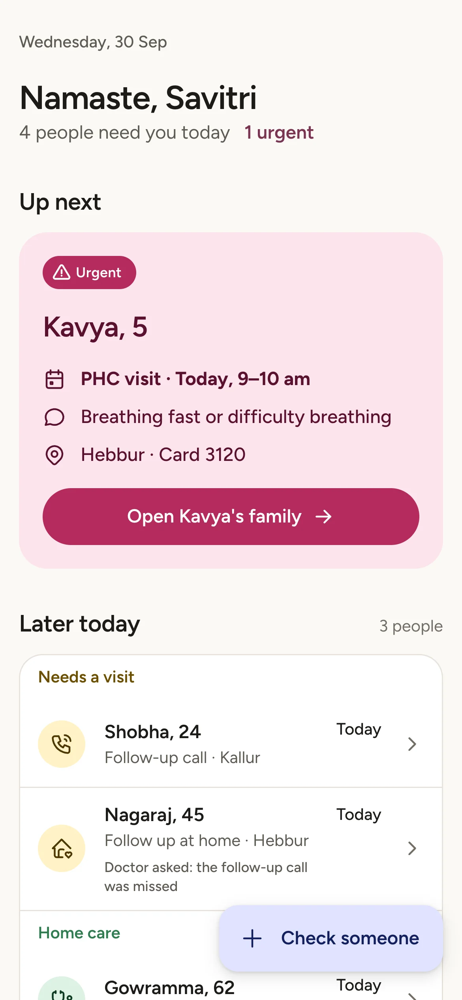
Scroll sideways
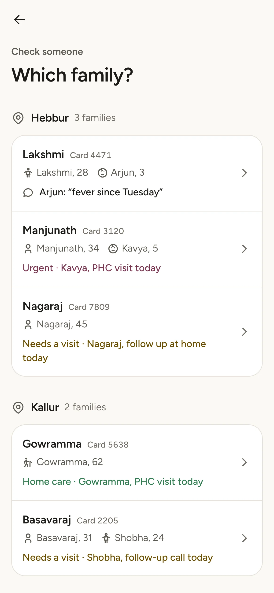
1Check someone
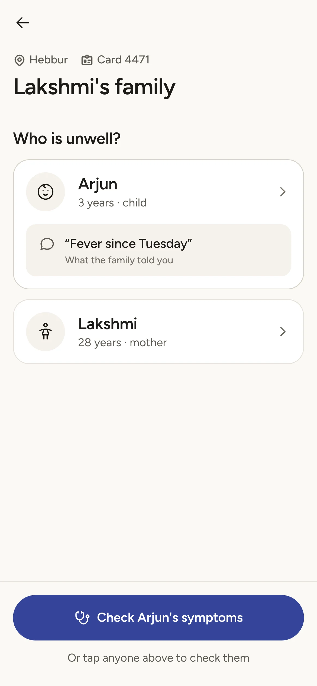
2Select person
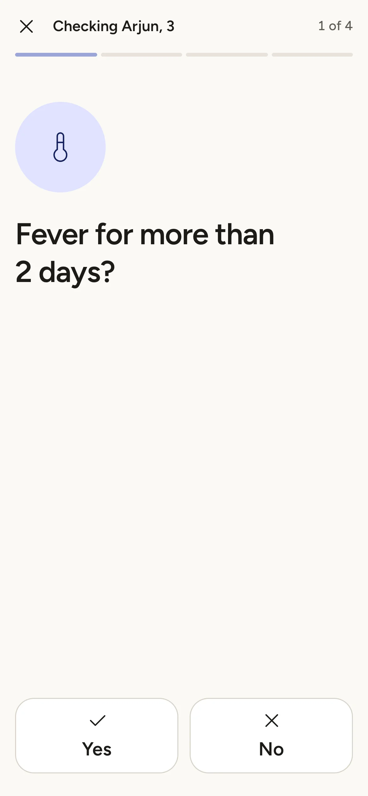
3Ask questions
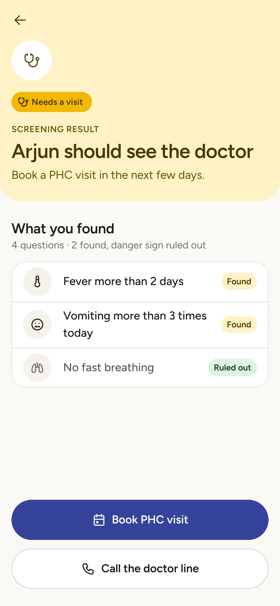
4Result
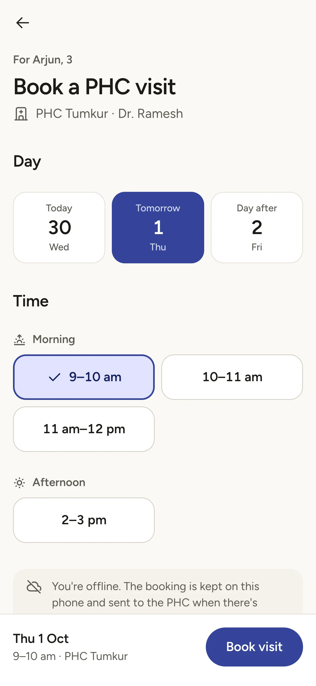
5Action
I kept the assessment linear because the ASHA should spend her attention on the person, not on navigating the interface.
A household can contain several people and several active care needs. The interface preserves the household context without collapsing everyone into one work item.
Today shows one row per person, and says when someone else in the same family also needs her. The family screen lists every open item for each person.
04Voice line
They already have a phone.
A family calls the number on their printed card from any phone, keys in the family ID, and picks the person by name. They can run the same screening the ASHA runs, book a visit, or hear the advice the doctor left for that person. 0 always reaches a person.
There is no screen to check, so every sentence has to be heard once and understood.
“Result: amber.”
“Noted: fever more than 2 days; no chest pain.”
A colour and a list, read out. Written for a screen, then spoken.
“Thank you. From your answers, Arjun should see the doctor.”
“You told us about fever more than 2 days and vomiting more than 3 times today. You did not report fast breathing.”
The person, the action, then what was heard, as sentences.
05PHC dashboard
They need to know what requires attention now.
The consultation experience keeps the history, doctor’s decision, family-facing advice and follow-up in one workflow.
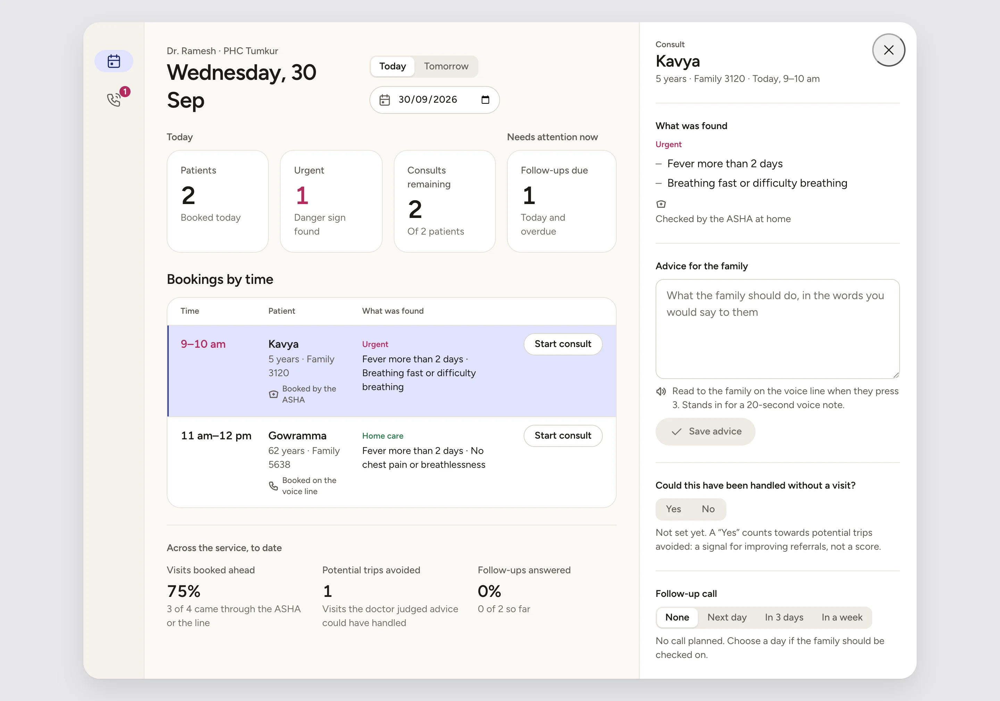
Arjun’s record, as it moves through one run of the prototype. Each step is saved once, by the person who did it, and read by the next.
Day 1At home
Lakshmi tells Savitri, the ASHA, that Arjun has had a fever since Tuesday.
Day 1At home, offline
Four questions, one at a time. Screening result: needs a visit, with what was found and what was ruled out.
Day 1Offline, then synced
A slot at PHC Tumkur for the next day. Saved on her phone as “1 visit to send”, sent when the signal returns.
Appears on the PHC list the moment it syncs.
Day 2Booked slot
Until he arrives, the doctor can view the booking but not record a consult.
Day 2In the room
Dr. Ramesh opens the sheet on what Savitri found, not a blank page.
Day 2After the consult
Saved once. The family hears it on the line by pressing 3: “Dr. Ramesh has a message for Arjun.”
Day 5If chosen
A call in three days. If it is missed, the doctor decides: call again today, or ask the ASHA to follow up.
06Handoffs
A handoff that only says “see this patient” makes the next person start again. Each one travels with what the next person needs to act.
Next action: see the patient. On the PHC day list, once synced.
Next action: hear it. Menu 3 on the line, named for the person.
Next action: follow up. “Follow up · Called the voice line” on her list.
07Edge cases
Never guess a patient, result, slot, or next action.
The system once had enough information to book — but not enough information to know who the booking was for.
This wasn’t a UI problem. It was a product-model problem.
On the voice line, pressing 0 from the menu booked a visit for the family head, a patient nobody had chosen, and “pregnant woman” could start pregnancy questions for a man. The fix wasn’t a better button. The person is now chosen by name, never by kind, the booking is read back before anything is written, and 0 reaches a person without creating a booking at all.
Aa
Figtree, one family, chosen so a matching Kannada face can follow.
4 · 8 · 12 · 16 · 24 · 32 · 48. No block off the 4 px grid.
Line icons that show what a thing is: a person as who they are, a symptom as the body part.
The IMNCI chart’s pink, yellow and green. Never colour alone.
Offline is a calm reassurance at the moment of saving, not an error.
I translated the system into a working prototype so the handoffs could be experienced, not just represented in static screens. All three surfaces read and write one shared record in the browser.
Today, families, the one-question-at-a-time check, results, booking, and a simulated offline queue that sends when the signal returns.
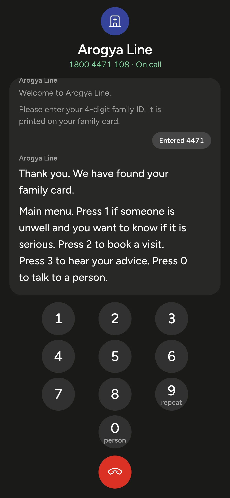
A call written as live captions: family ID, person by name, the same screening, a read-back before booking, advice by person, and 0 for a person.
The day in time order, the consult sheet beside the list, and follow-ups grouped by who acts next.
This is a prototype, not a production healthcare system. Clinical rules are illustrative, and production would require clinical validation, secure identity, real telephony, persistent offline storage, and approved healthcare infrastructure. All names, families and data are invented.
A single patient journey can span three interfaces without losing context.
Offline states can be made explicit rather than hidden.
Voice can extend access without requiring a smartphone.
Edge cases can be treated as core UX rather than exceptions.
08Learnings
Arogya Line explores what happens when care coordination is treated as a product problem — not just a collection of screens.